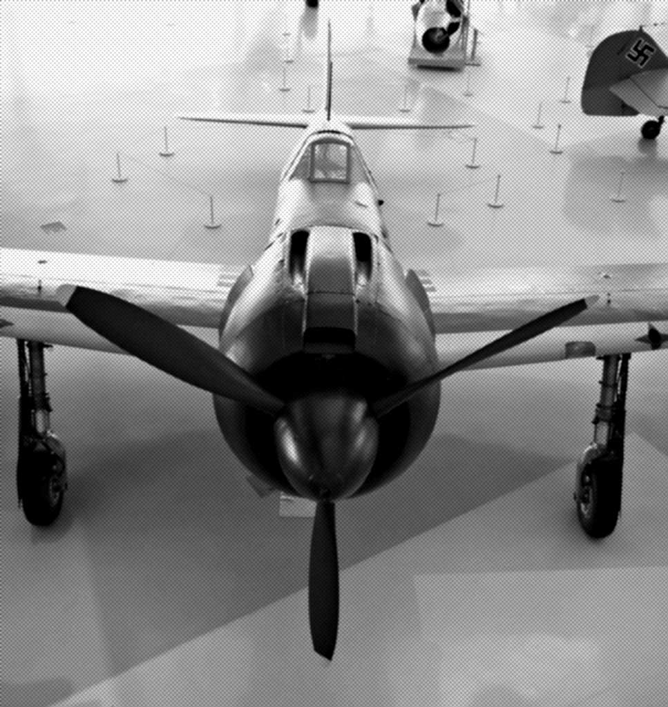
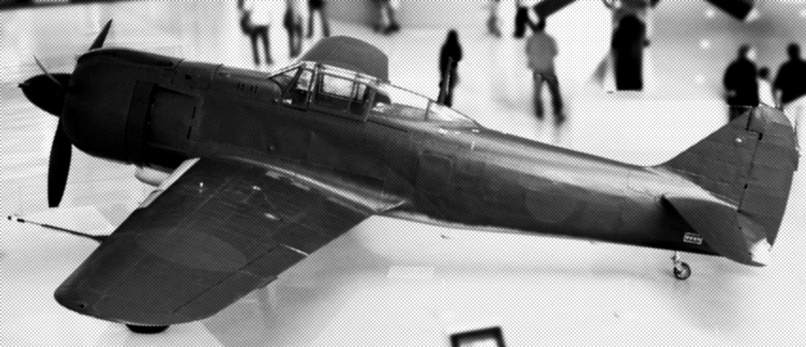
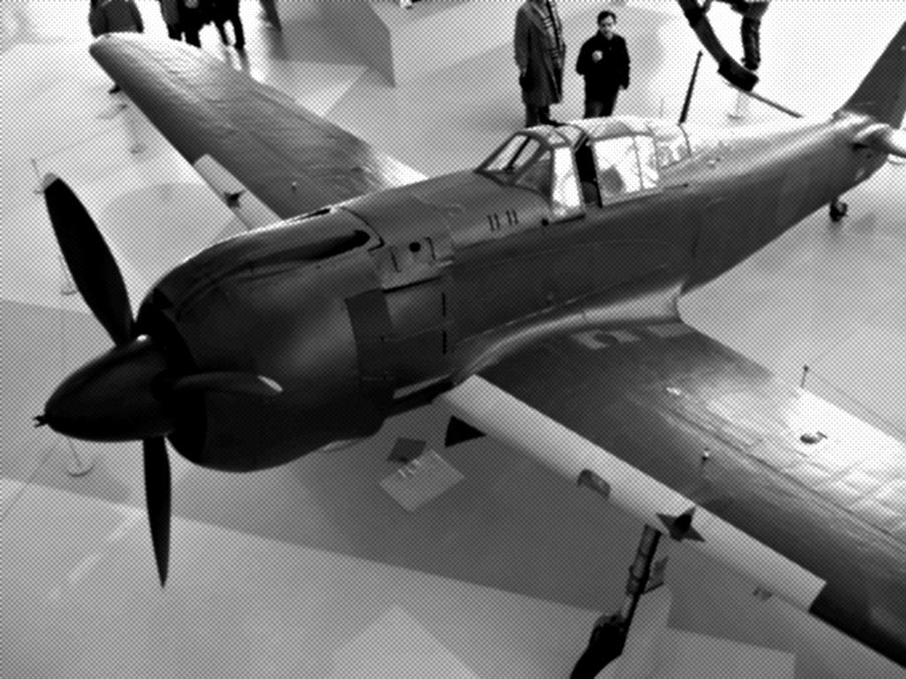

| 「五式戦の鬼」 ・・・帝都上空 Ｐ５１ヲ撃墜セヨ・・・ （横組み） eXism Short Magazine | |
| ワクロー3 | |
| (2015) | |
児玉照之大尉は、着陸した機体を滑走路脇の定位置に停めると、飛行帽を脱いで内側に貼りつけた写真に語りかける。あの日以来、基地に戻ったら、機体を出る前に行う儀式のような時間だ。
「きょうも戻った。お前たちが、生きて戦えというのなら、俺は、あすも戦う」
写真には、二十二歳だった妻と、その手に抱かれた一歳だった長男が写っている。宮参りに行った時の写真だ。
アメリカ軍は、三月十日の大空襲で東京の市街地の東半分を焼き払い、その後は、残った西半分の市街地、さらに西に広がる中央本線の沿線の住宅地を、虱潰しのように執拗な、無差別爆撃を続けていた。児玉大尉の妻子は、五月、世田谷区と杉並区を襲った空襲で死んだ。
陸軍飛行２５５戦隊は、帝都の防空が任務であり、児玉は、陸軍武功徽章を授与された若い戦隊長だった。
児玉の武功徽章は、Ｂ２９が戦闘機の護衛なしで空襲に来ていたころ、肉薄しすぎてＢ２９に衝突し、「体当たり撃墜」と認定された際に与えられたものだ。武功徽章を受けてまもなく長男が生まれた。
妻子と過ごした時間は、とても少なかったが、家族と会えるだけでも、得難い時間だった。南や北の前線で倒れてゆく陸海軍の兵に比べれば、内地で戦う自分は恵まれている。その僥倖をかみしめながら、この手で抱いた坊やの重さが、まだ記憶に残っていた。俺が坊やを抱くのを、傍らで微笑んでいた妻。二人はもういない。写真を通して、児玉の記憶に残るだけだ。
児玉大尉は、写真を見詰めると、飛行帽をかぶり直し、戦隊長の顔に戻る。

風防を開けて機外に出ると、整備を担当する機付長がそばに来ている。
「きょうは、いくつ描いときましょう」
児玉大尉は指一本を示した。風防の下に、Ｂ２９の影絵が六つ。小型機の影絵が十一個描いてある。前に乗っていた陸軍三式戦闘機「飛燕」の時代から引き継いだ撃墜マークだ。
「キの１００は、グラマンには対等以上だ。これなら大丈夫だ」
「頭でっかちで不格好ですけどね。こいつはいいです。慣れた発動機なので、私たちは、整備しやすいです」
「発動機も機体も何年も前から、あったから、もっと早く組み合わせて、出てくりゃよかったんだ」
「そうですね」
キ１００には、陸軍三式戦闘機「飛燕」のような愛称もない。制式化されたので「陸軍五式戦闘機」と呼ぶこともできるが、誰もそんな名称で呼んでない。試作段階の開発番号、キ１００（きひゃく）または、キの１００（きのひゃく）と呼んでいる。「飛燕」二型に搭載していた液冷発動機ハ１４０を、空冷発動機ハ１１２Ⅱに換装した、間に合わせのような戦闘機だった。
だが、児玉大尉には、これまで搭乗したどの機体より、しっくり来る感じだった。
キ１００であればグラマンＦ６Ｆだけではなく、最近出現したアメリカ軍の最強戦闘機ノースアメリカンＰ５１にも挑めるだろう。
操縦席から出て機首を見ると、機体と機首の継ぎ目から排気管が並んでいるのが見える。首筋からむき出しの血管が露出しているようでもある。
細い胴体に巨大な頭部という理不尽な形状を見ていると、三式戦「飛燕」の美しい機体が懐かしくもなるが、キ１００に一度でも乗ったら、「飛燕」を懐かしむ気も起きないから現金なものだ。
「戦時中でなけりゃあ、こんな理屈に合わない戦闘機なんかできなかったろう」
「細い胴体に、ぶっとい頭...三菱とか中島なら、絶対に作らなかったでしょうね」
児玉大尉は、うなずいた。
三菱製の海軍機や、中島製の陸軍機は全体が流線型にまとめられ、美しく絞り込んである。キ１００より早く制式化された陸軍四式戦闘機「疾風」も機首から尾翼まで理にかなった形をしている。頭でっかちなキ１００の形状は、いかにも行き当たりばったり感が強い。
児玉大尉は、愛機を整備兵に委ね、ピストに行き、次々と帰還してきた部下たちから戦果報告を受ける。集計した後、基地司令部に出向いて戦果を報告すると、いつものように基地司令官が「ご苦労」と伝える。
だが、この日は、報告の直後、基地に同居する第２０飛行師団の参謀・西村均中佐から師団命令を伝えられた。それは児玉大尉にとって、あまりにも受け入れ難い命令だった。
「・・・よって、飛行第２５５戦隊は、後図のため機体の温存に努め、敵艦載機との交戦を禁ずる」
児玉大尉は命令を示達した西村参謀を見詰めた。
「機体の温存とは、いかなる方法を指すのでしょうか」
「交戦しないようにするのだ」
「基地に敵襲があった場合も交戦しないのですか」
「機体の温存を図れということだ。離陸しないで基地にとどまれば、敵の攻撃を受けるではないか。それは交戦するということだ」
こんな曖昧な命令はいまだかつて聞いたことがない。児玉大尉は、言葉を選びながら確認した。
「敵襲があったら離陸せよということですか」
「そうだ」
「離陸してどこに向かうのでありましょうか」
「交戦してはならぬ、そう言っているのだ」
要するに戦わずに逃げろということか。児玉大尉は、あえて確認した。戦わずに逃げろというのは、戦闘機部隊の本分からかけ離れているからだ。
「命令は、敵襲があれば離陸して交戦を避けて退避する、でありましょうか」
「退避とは言っておらん。適宜、交戦を避けよと命令している」
傍らの第２０飛行師団の司令官・野間信武少将が、言い訳がましい説明まで加えた。
「未曾有の大東亜戦争の決戦の時が迫っているのだ。敵上陸部隊に痛撃を加えるためには、戦力の逐次消耗は避けねばならん。わが新鋭のキ１００（陸軍五式戦闘機）を抱える２５５戦隊は、その時まで温存しておかねばならぬ。目先の小さな敵には目をつぶり、来るべき大の虫を叩くために、今はじっと雌伏せよ。命令の大意は、そのようなものだ。退避などという退嬰的な言葉はつつしめ。士気にかかわる」
なにが小さな敵だ。東京市民を大量殺戮している大敵だぞ。しかも、戦闘機部隊の俺たちに「戦わずに逃げろ」そう命令しているのは司令官のあんただろう。士気に関わるというなら、この命令そのものが士気に関わる退嬰的なものじゃないか。バカバカしい。
野間司令官の説明にかぶせるように、西村参謀は詰問した。
「児玉大尉。さきほど下した命令の復命を終えていない」
児玉大尉は、怒りを抑えながら復命した。
「飛行第２５５戦隊は、敵艦載機との交戦を避け、戦力温存に努めます」
自分自身が受け入れがたい命令を、部下たちにどう伝えるのか。児玉大尉は、苦渋に満ちた顔で、司令部を後にした。
戦闘機部隊に「戦闘を避けよ」との命令を伝えられた部下たちは、予想通り激しい不満の声をあげた。命令に従うのは軍隊の鉄則なのだが、命令が命令だけに、耐え難く思っていたのだ。

「戦隊長殿は、それでいいのでしょうか」
「戦隊長殿のお考えを聞かせてください」
「俺の考えではない。命令なんだ」
「戦隊長。飛行師団は、アメ公の好き勝手にさせて黙ってるんですか」
「その時が来るまで黙っている、ということだ」
「その時っていつなんです。目の前に敵が来たら逃げるなんて、バカな命令を撤回するよう、上申しましょう」
ピストに貼った寄せ書きが児玉大尉の視界に入る。中心の日の丸の上に「見敵必殺」の文字があり、今は虚しく見える。児玉大尉は、憤懣をぶつけてくる部下を不本意ながら諭すしかなかった。
「航空総軍からの命令だ。基地司令官や飛行師団に上申しても覆らない。本土決戦の時まで、じっと腕を磨いて、その時が来たら、大戦果をあげてやろう」
翌日から、戦隊は陰鬱な空気に包まれた。
敵機飛来の情報が来るたびに、警急出動するところまでは、昨日と同じだが、今日からは、離陸するものの敵とは別の方角に飛ぶだけだ。地上にいると銃爆撃されるので、離陸して時間をつぶして戻ってくる。その燃料も惜しい時は、別の陸軍基地に着陸して敵が去るのを時間つぶしする。戦闘機部隊にとって、屈辱的な日々の始まりだ。
戦隊の士気は目に見えて落ちた。口には出さないが、失望を含んだ怒りを部下たちが自分に向けてくるのを感じる。
戦隊長の武功徽章は飾りなのでしょうか。帝都の守りを任された我々は、市民が銃爆撃されるのを座して見ているだけなのでしょうか。無言で重たい不満が、戦隊に蔓延していった。
また、退避行動が一ヶ月も続くと、基地周辺の市民の反応にも変化が見られた。これまでは離陸のたびに手を振り、歓声をあげてくれた周辺の住民は、「戦わずに逃げる」２５５戦隊の姿を見続けて飛行隊員に冷ややかな視線を向けるようになった。
ある日、児玉大尉自身が、その市民感情を浴びることになる。
児玉大尉が公務外出から戻り、基地に向かう一本道を歩いていると、向こうから三歳くらいの子供の手を引いた母子が歩いて来た。若い母親の背には乳児もいた。児玉大尉は、死んだ自分の妻子のことを思い出し、白昼夢のようなおももちで、母子を目で追っていた。すれ違うほどに近づき、母親は会釈して道の脇によけようとした。その時だった。
米軍の戦闘機Ｐ５１ムスタングが三機、超低空から現れて銃撃してきた。母子に「危ない」と叫ぶこともできなかった。児玉大尉は、反射的に側溝に飛び込み、銃弾は至近距離の地面にずぶずぶと突き刺さった。
銃撃は何度か反復して行われ、児玉は地上で死ぬのはいやだな、そう思って、首をあげると、搭乗席で笑いながら射撃しているアメリカ軍のパイロットを見た。機体にＢ６の文字。垂直尾翼に赤い塗装がはっきりと見た。
敵機が去ってしまうと、周囲はもとの静けさに戻り、児玉のそばから、うめき声が聞こえてきた。
航空機銃の威力は人体には甚大だ。相手の航空機の装甲を破壊する威力の銃弾が人体を貫通すると肉体は四散する。
母親が手を引いていた子供は頭部を半分吹き飛ばされて即死していた。乳児をおぶっていた母親も、背中の乳児ごと背部から腹部に貫通銃創を受けている。おびただしい出血で、血に染まり瀕死の状態だった。
母親の死は時間の問題に思えた。児玉は呆然と側溝から立ち上がり、それが本能であるかのように、母子の傍らに座り、母親に手を差し伸べた。母親の顔が、大量の失血とともに、みるみる土色に変わってゆく。
アメリカ軍のパイロットは、飛行服の俺を狙って射撃したに違いない。だが、死んだのは母子で、自分ではなかった。悔しく、無力だった。
手を差し伸べている自分は、せめてもの償いのつもりなのか！そう、自問した瞬間、差し伸べた手が誰かに激しく振り払われた。
「触るな！お前には、その資格はない」とでも言いたげに。
児玉が振り向くと、高齢の農民が児玉を睨んでいた。怒りを含んだ強い口調で児玉に言った。
「救助なら、俺たちがやる。兵隊さんは、自分の任務を果たしてください」
児玉は、こわばった顔で農民を見た。農民は児玉の制服と階級章を見た。飛行服を着ている児玉は、陸軍飛行基地の空中勤務者と誰が見ても分かる。
「大尉さん、あなたは飛行兵ですね。この頃、あんたがたは、敵機が来たら逃げてばかり。帝国陸軍は、いつから逃げることが任務になったんですか」
その通りだ。児玉は、無言で農民を見つめ、母子の遺体に敬礼し、その場を去った。
児玉は、司令部に戻り、帰営を報告すると、制服が汚れていたからだろう。西村参謀から質問された。
「帰営中、敵戦闘機の銃撃を受けました。私は無事でしたが、傍らで民間人が死亡しました」
「無事でなによりだ」
児玉は、西村参謀に言い返した。
「すぐそばで民間人が死にました。無事でなによりとは思えません」
西村参謀は児玉に言った。
「貴様は武功徽章を受けた空中勤務者であり指揮官だ。師団の戦力でもある。俺は個人的に貴様の無事を祝福したのではない。貴様と言う戦力が無事であったと安堵しておるんだ。この場合、民間人は戦力ではない。戦力の無事を喜び、戦力でないものの喪失で済んでよかったと言っておるのだ。なにごとも戦時だ。平時とは違う。意味を取り違えるな」
理解できません。児玉は口まで出掛かって止めた。口先だけの争いになっても意味はない。俺はやるときにはやってみせる。
怒りを押し殺してピストに向かった。
母子の死に直面したことは、部下の誰にも言わなかった。目前で死んだ母子三人が、自分の妻と坊やの再来に思えてならなかった。またも、守ってやれなかった。俺は何をしているのか。
我が物顔に飛行する敵戦闘機を見ながら、林の影や掩体壕で息を潜めている、飛行第２５５戦隊。俺たちは本土防空の任務を負った戦隊なのだ。俺は、その戦隊長だ。
夕方、この日三度目の警報が出る。
「敵大型機二百機編隊が伊豆半島より侵入。小型機多数の随伴あり、飛行高度は約四千メートル」
かなりの低空侵入だ。市街地は焼夷弾攻撃で手ひどくやられるだろう。
また眺めるだけだ。飛行帽の内側にいる妻子や、銃撃されて死んだ母子に対して、なんと詫びればいいのか。
「飛行第２５５戦隊は、警急姿勢に移行せよ。順次離陸、静岡県の板妻飛行場に向かえ」
司令部は退避する飛行場まで指定して来た。ということは、敵襲が一時間ばかり続くと想定しての命令だろう。多数の大型爆撃機と随伴の戦闘機による大空襲と判断しているということだ。
「行こう」
児玉は、ピストにいる部下たちに声をかけ、乗機へと走る。
林の中や掩体壕の中に隠蔽された、キ１００（陸軍五式戦闘機）は、すでに始動車によって、エナーシャスターター（慣性始動装置）がかけられ、プロペラの回転がかかり、いつでも離陸できる状態だ。
児玉は先頭で離陸し、全機がそろうのを待って編隊飛行で退避する。いつもの手順だった。いつもと違ったのは、石橋伍長の機体が離陸後、「発動機不調。基地に戻る」と連絡してきた。児玉は石橋に、確実に基地に戻るよう通信を試みたが、無線は通じなかった。やむなく石橋伍長を残したまま編隊を組んで退避飛行に入った。
それから数分が経過したころ、石橋伍長が無線で「発動機回復、ただちに合流せんとす」と再合流を伝えてきた。単独での追及となるが、迫っている敵襲をかわせるのだろうか。
児玉は心配したが、心配は現実となってしまう。石橋伍長が合流することはなかった。
石橋伍長の消息を基地に照会したが、この時も無線は通じなかった。
敵の空襲が終わり、児玉大尉が、退避先の静岡県の板妻飛行場から２５５戦隊を率いて基地に戻ると、周辺の市街地は、焼夷弾攻撃で灰燼に帰していた。基地も銃爆撃を受けて、大型格納庫が破壊されていた。滑走路にも巨大な穴が開いている。
石橋伍長はどうなったのだろう。着陸後、報告のため司令部に行くと、西村参謀が、こちらから質問する前に苦々しい顔でこう言った。
「石橋伍長が命令に反して敵艦載機と交戦し墜落した」
児玉大尉は、ただちに発言した。
「石橋伍長は、発動機不調で基地に帰還を伝え、その後、回復したので追及すると伝えて来ました。交戦の意図はありません。退避が間に合わず、やむなく応戦したのであります」
「調査の結果、発動機不調は狂言と思われる。最初から交戦するつもりで引き返したのだ」
「墜落した機体を調査しない限り、発動機不調の有無は分かりません」
「口を慎め！司令部は交戦を認めていない。石橋伍長は死んだが、生きていれば軍法会議だ。師団命令を無視して交戦したのだからな」
「戦死であれば、石橋伍長の戦果は...」
「黙れ！」
西村参謀が児玉の質問を遮った。
「戦果などない。命令違反は明白だ。今後、２５５戦隊から同じ違反者が出た場合、隊長の貴様に責任を取ってもらう。その覚悟で部下を掌握してくれ」
交戦して死んだのなら、石橋伍長は名誉の戦死ではないのか。その言葉を使わず、西村参謀は軍法会議を持ち出した。許せない。心の中にあふれてくる怒りを押し殺して児玉は復命した。
「２５５戦隊は、師団命令を順守し敵艦載機との交戦を避けます」
司令官の野間少将が、児玉に重ねて言い渡した。
「本土決戦で敵を殲滅し、戦局を一挙に挽回するのだ。お前たちは、そのための貴重な戦力であることを忘れるな。今回の命令違反は、全軍的な企図を暴露するものである。決戦を前に、逐次損耗を重ねては、何の意味もない。また、敵に対して私情や私怨に基づく復讐めいた行動も禁ずる。心して命令を実行せよ」
私情や私怨？空襲で妻子を失った俺のことを言っているのか。許しがたい不信だ。児玉は、この瞬間に、ある決意を固めた。
児玉が、険しい表情でピストに戻ると、部下たちが集まって来た。石橋伍長の死が、すでに伝わっている。児玉は、部下に伝えた。
「石橋伍長は敵と交戦して戦死したようだ。司令官からは、これまでの命令を厳に実行するよう重ねて命令された。引き続き戦隊は、敵が来たら退避せよということだ」
部下たちに一層の失望が広がる。児玉は続けた。
「石橋伍長を襲った敵は、先般来、爆撃機の前衛としてやってきているＰ５１の戦隊に違いない。我々が迎撃しないことをいいことに、近頃、基地周辺で一般市民まで銃撃している」
児玉大尉は、一呼吸おいて言った。
「やつらは明日も必ず来る。師団命令は命令として、俺には考えがある。俺の考えは、明日の出撃前に、みなに伝える」
部下たちは、児玉大尉の言葉から、ただならぬ決意をくみ取った。
翌日午前九時半すぎ、敵機来襲の知らせが入り、２５５戦隊に警急出動が命令される。「敵大型爆撃機二百機、小型機の随伴あり」との情報だ。
児玉は、ピストに集まった部下たちに落ち着いた声で伝える。冒頭に形式ばかりに、小声で交戦回避の師団命令を伝え、続いて声を明瞭にして命令した。
「飛行第２５５戦隊は、これより全機をもって戦闘訓練を行う。俺が訓練目標に誘導する。訓練空域に入ったら存分に撃て。以上」
「はいっ！」
意図を察した部下たちは、力強く喊声を上げる。
敵艦載機との交戦を禁止されている。ならば、これは交戦ではなく戦闘訓練だ。児玉大尉が考えた便法だった。この便法が師団司令部に通じるはずはない。それを承知の上で、部下たちに責任が及ばないよう「戦闘訓練」名目で、交戦を指示したのだった。
すでに出撃準備を終えていたキ１００は、戦隊の全力、二十五機すべてが次々と離陸した。児玉大尉は、一旦いつものように退避する空路を飛ぶが、まもなく反転した。児玉大尉は、無線機を通じて、全機に命令した。
この日だけは、全戦闘を通じて、奇跡的に無線が通じた。
「戦闘訓練。全機、高度四千メートルを維持し、訓練空域の東京駅上空に向かう」
児玉大尉の意図を察した基地から、ただちに無線が入る。
「２５５戦隊は引き返せ。繰り返す。２５５戦隊は命令を順守し引き返せ」
児玉大尉は、自分の意思を徹底するため、司令部命令に重ねるように無線機に叫ぶ。
「全機、我に続け！」

２５５戦隊がそのまま飛び続け、先頭を飛ぶ児玉に、高度二千メートルの低空を、皇居附近を銃撃しながら飛行するＰ５１の二十機編隊が見えた。相手はまったく気が付いてない。この一か月というもの、日本軍機の組織的な反撃がないので、すっかり油断していたのだろう。
児玉たちのキ１００（陸軍五式戦闘機）二十五機は、優位から降下し、不意打ちに、Ｐ５１の編隊を襲った。Ｐ５１編隊は、児玉たちが第一撃をかけても、回避姿勢すらとらず、まったく虚を突かれた。次々に、児玉たちの二〇ミリ機関砲の餌食になる。たちまち五機以上が金属片をまき散らせて墜落した。
ようやく気付いて逃げに転じたＰ５１を、児玉大尉たちは追撃し、さらに多数を撃墜、撃破した。敵は半数以上を失い、そのまま散り散りになって逃亡する。
Ｐ５１の編隊は、一方的に攻撃されて去って行った。
硫黄島から来襲しているＰ５１は、落下増槽をつけていても、日本本土に滞在できるのは二十分くらいしかない。帰りの燃料がないので、反撃も限られている。やつらも決死的覚悟で大型機を護衛しているということだ。本土決戦に備えるといって、俺たちが逃げ続ける意味はない。児玉は、そう確信した。
久しぶりの大戦果だった。これでいい。児玉は満足して帰投した。
「飛行２５５戦隊は、戦闘訓練を終了、これより帰投する」
損失なしの完勝だった。
着陸すると、児玉は、搭乗席で飛行帽を脱ぎ、いつもの儀式を手短に行った。
「きょうも戻ってきた。戦果は上々だが、別の問題が持ち上がるだろう。だが、俺はお前たちに恥じないことをしたつもりだ」
久しぶりの大戦果に、部下たちは一人残らず笑顔で降りてくる。だが、戦果に水を差すように、児玉のもとに憲兵を伴った西村参謀がやってきた。
「児玉大尉。身柄を拘束する」
西村参謀は、憲兵に命じて児玉を捕縛させて師団司令部に連行した。戦果に酔いしれていた部下たちの興奮は一瞬のうちに静まり、連行される児玉戦隊長を呆然と見送った。
児玉は、本部に連行され、野間司令官の前に立たされた。幕僚たちの誰からも求められなかったので、戦果報告も発言もしなかった。
野間司令官が命じた。
「児玉大尉から階級章を奪え」
児玉に正対していた憲兵が、肩章と襟章を引きちぎった。
「抗命罪で軍法会議に付する。追って指示を待て」
その時、副官が野間司令官に電話を取り次いだ。
野間司令官は、自席の電話に出て座って聞いていたが、まもなく起立し、やがて直立不動で電話を聞きはじめた。相手が航空総軍司令官だとしても、過大な動作だった。
野間司令官の緊張した声がだたならぬ響きを帯びて室内に伝わる。
「...過分のお褒めに預かり、恐懼に堪えません。はっ！謹んで必ず伝えます」
電話を切ると、西村参謀を呼んで声を低めて何事かを伝え、ついで児玉に伝えた。
「飛行第２５５戦隊の先ほどの戦闘に関し、畏れ多くも...」
野間司令官は直立不動の姿勢を取り。
「今上陛下の上聞に達し、ただいま内大臣閣下を通じて、お褒めの言葉を賜った」
今まで児玉大尉を軍法会議にかけようとしていた野間司令官は、一転して、天皇陛下からの褒賞の言葉を伝える立場になった。
千代田区上空での白昼、低高度での戦闘だったので、市民はもちろん宮城からも、一部始終を見ることができた。日の丸をつけた戦闘機による久しぶりの大戦果は、師団司令部は無視しても、誰も黙殺することなどできなかったのだ。
野間司令官は、状況変化によって、あわてて通常の手続きを思い出した。
「児玉大尉。戦果を報告せよ」
「飛行第２５５戦隊は、本日０９３０戦闘訓練を実施し、千代田区付近に飛来した敵戦闘機二十機編隊と訓練交戦、撃墜確実六機、撃破確実九機。計十五機を撃墜破せり。報告おわり」
児玉大尉が考えた「戦闘訓練」という表現そのままで報告したが、野間司令官も西村参謀も文句はつけなかった。
「ご苦労。戻ってよし」
野間司令官は憲兵に向かって。
「階級章を児玉大尉に戻せ」
天皇陛下が褒めた人間を処罰することなど、できるはずがない。軍法会議はウヤムヤになり、降等処分も沙汰やみにしたらしい。児玉は、天皇陛下によって窮地を脱し、部下のもとに戻った。
喜びにわく戦隊だった。だが、その喜びは一日限りのものになった。
天皇陛下のお言葉によって、「命令違反」は不問となったが、陸軍の基本方針...本土決戦に備えて航空戦力を温存する命令は不変だった。
児玉のような例が続出しては困るのだろう。航空総軍の命令は引き続き「戦力温存」であり、それを実行するため、第２０飛行師団は、児玉に監視の兵をつけ、戦隊長の解任こそしなかったが、部下と切り離す処置に出た。
翌日から、２５５戦隊は、司令部が指定した別の人物が指揮にあたり、児玉は監視兵をつけられ、兵舎の一角に軟禁された。便宜上、飛行服は着ているが、特に命令がないかぎり出撃してはならず、戦闘機に乗ることはできなくなった。
児玉大尉にとって、飛べないことが、これほど辛いことであることは予期していなかった。飛んで戦うこと、それだけが児玉にとって、生きる意味だったからだ。飛行帽にいる妻子にも顔向けができない。
軟禁されている兵舎の窓から、離陸してゆく部下の機体を見送り、その後入れ替わるようにやってくる敵機の銃爆撃を眺めるだけだった。
監視役の兵士は、空襲があると必ず言った。
「防空壕に退避してください」
児玉は常に断った。
「俺はここでいい」
だが、何度目かの空襲の際に、こうも思った。
「俺は、ここでいい。だが、俺が退避しなければ、お前もここに残る必要があるんだな」
兵士は無言だった。
「部下が飛び立つのに、俺が防空壕に入るのは怯懦で嫌だと考えているが、さりとて、退避しないことで、お前を空襲の巻き添えにするのは、俺の本望でもない」
兵士は困惑したように児玉の顔を見る。
「お前も困るだろうから、行くよ」
その日から児玉は防空壕に退避するようになった。
考えを変えれば、兵舎から防空壕に退避する時間だけが、自由な時間ということだ。防空壕に行くまでの間に、来襲する敵機を見ることもあった。
超低空を、銃撃しながら飛来する敵戦闘機は、行きがけのついでとばかりに、基地の滑走路に並べた欺瞞のための廃物機体や、基地の施設に激しい銃撃を加えてゆく。
児玉大尉たちが「戦闘訓練」で痛撃したあとは、再び沈黙する日本軍を完全に見くびっていた。Ｂ２９の護衛で飛来しているものの、交戦する相手もないので、暇つぶしのつもりもあったのだろう。Ｐ５１の編隊は、ほぼ毎日やってきて、低空からところ構わず銃撃する。
何度目かの防空壕行きの時だった。
「あいつだ。あの野郎」
児玉大尉は、いつか遭遇した尾翼を赤に塗り、機体にＢ６と記されたＰ５１を目撃した。児玉大尉の目の前で笑いながら射撃して、母子を殺したＰ５１。「戦闘訓練」のあの日、皇居を低空で銃撃していたＰ５１編隊の先頭機。
やつは今、我々の基地の上空を旋回し、ほしいままに銃撃を加えている。我々が迎撃しないことをいいことに。鉄道の駅舎や車両、学校といわず民家といわず、市民を射殺し皇居までも銃撃している。許せない。必ずやつを落としてやる。ゼッタイに。
児玉は、防空壕に走り込むのをやめ、基地の松林に向けて走った。そこには、掩体壕があって、児玉の乗機が格納してある。傍らには、命令があれば出撃できるように、若い整備兵が身を潜めていた。
彼らは、児玉が出撃を禁じられた後も、いつでも飛べるようにしていた。整備兵たちも、上層部が加えた児玉への仕打ちに怒りを覚えていたのだ。
「児玉戦隊長の出撃許可に備えて、常に飛べるようにしておこう」
整備兵たちは一日も欠かさず、児玉の愛機を懸命に整備していた。万一の出撃に備え、空襲警報が出ても、誰も防空壕に退避せず、この日も、機付の整備兵全員が、児玉の愛機のそばに待機していたのだった。
児玉が駆け込んできた瞬間、若い整備兵は、その夢が叶ったと思った。だが、整備兵は、自分の任務も心得ていた。
児玉は、走ってきて怒鳴った。
「ペラ回せ！」
「だめです。命令がありません」
児玉は鬼気迫る形相で怒鳴った。
「命令は俺が出す。回すんだっ！。回せっ！」
若い整備兵は、自分の上官の方を振り返る。一部始終を見ていた年配の整備兵は、うなずき、静かに言った。
「回せ。俺が責任を取る」
若い整備兵は、上官の言葉を受けて喜々としてプロペラを回転させた。別の整備兵は、車輪止めをはずし、別の整備兵は、児玉大尉を一刻も早く搭乗席に乗せようと手を貸した。
三菱製ハ１１２Ⅱ型空冷二重星型十四気筒、千五百馬力の発動機が快調に始動した。
搭乗席に乗り込む児玉大尉に、年配の整備兵は叫んだ。
「燃料も銃弾も全部入れてあります。ご武運を！」
児玉大尉は敬礼し、機体を滑走路に動かす。滑走路に姿を現した児玉大尉のキ１００、陸軍五式戦闘機。さっきのＰ５１を追うとなると、あまり余裕はない。
ただちに増速して離陸する。一週間ぶりの空だ。限りなく自由を感じる。さきほどのＰ５１を追って、東の方向に飛ぶ。やつらが硫黄島に戻るとすれば、必ず東方向に向かっているはずだ。
「見てろ！俺はやってやる」
児玉大尉は、心の中で帽子の中の妻子と、あの日、自分の身代わりに死んだ名も知らぬ母子に告げた。
帝都上空は、この日、雨こそ降っていないが、高度三千メートル付近に低い雲が垂れ込めていた。
児玉大尉は、赤い尾翼のＰ５１に追いつくため、高度を断雲の下ぎりぎり三千メートルにとって増速すると、ふだんは感度の悪い無線機が、この日に限って基地から鮮明な音声を受信してくる。西村参謀の声だ。
「引き返せ。引き返せ。命令だ。引き返せ」
黙れ！児玉は、応答せず無線機を切る。
全速力で飛んでいると、行く手に二十機ほどのＰ５１の編隊を発見した。対地銃撃を企図しているせいか、そこそこの速度で単縦陣で一本の槍のように飛んでいる。高度は二千メートルくらいだ。Ｐ５１が全速を出していると、キ１００でも追いつけないので幸いだった。
赤い尾翼のＰ５１は、編隊の先頭を飛んでいた。ヤツへの攻撃機会は一度しかないだろう。雲を利用して、ヤツに直接攻撃を加えることにした。Ｐ５１の速度と高度が今のままだとしたら、二十秒くらい雲の中を飛んで下に出れば、編隊を全部追い越せる。雲から出たら先頭のヤツを背後から、いきなり狙おう。
児玉は、機体を雲に突っ込ませた。何も見えない。頭の中で秒数を数える。下を飛んでいるＰ５１編隊を頭に思い浮かべて。いま最後尾、ひとーつ、ふたーつ、みーっつ...見えない敵機の編隊を追い越して行った。
二十を数え終わったとき、降下して雲から出た。ヤツは？いた。ただし目の前の一機のその向こう側だ。児玉の機は、二番手の敵機の直後に出てしまったのだ。
三式射爆照準器に敵の二番機がいっぱいに広がる。射撃ボタンを押すと二〇ミリ機関砲がドドドドドと重い音を残して撃ちだされ、敵の二番機は右翼を砕かれて、横転しながら墜落していった。一機撃墜。
児玉の機は、そのまま直進し赤い尾翼のＰ５１を追う。さっきの二番機に対して降下しながら射撃したので、一番機を狙うために機首をあげねばならない。後続の敵機に撃たれる危険が大きい。だが児玉は、構わず機首を起こして先頭の敵機に迫る。撃ったらすぐに左によじって逃げないと背後から別の相手に撃たれる。
児玉は一番機を追う。気が付いた赤い尾翼のＰ５１は、急激な増速と左旋回で逃れようとした。児玉は構わず、衝突する勢いで迫り、二〇ミリ機関砲を発射した。至近からの銃弾を浴びて、赤い尾翼のＰ５１は、四散して墜落していった。二機撃墜。
「さあ、次！」
児玉は、後続の敵機から撃たれるのを避けるため本能的に小さく左旋回しながら、次を狙おうとしたが、間に合わなかった。赤い尾翼のＰ５１への執着によって、退避する機会がわずかに遅れたからだ。児玉の機は、反撃の闘志に燃えた敵機に撃たれた。
バリバリバリバリと嫌な破壊音。左翼を三分の一吹き飛ばされ、機首にも命中したらしい。発動機から白煙が出て、それが操縦席に入ってきた。何も見えなくなった。
児玉の機体は、惰性で左旋回して、そこに追跡してきたＰ５１の一機と空中衝突した。敵味方の二機は絡み合って墜落した。
児玉の最期の戦闘は、地上からはっきりと見えた。雲の下の低高度で起きた空中戦は、多くの市民が目撃するところとなった。
Ｐ５１の二十機編隊に、陸軍機が一機だけで襲撃して、二機を撃墜、別の一機と衝突して墜落した。
焼夷弾に焼き尽くされ、焦土と化した地上で、市民たちは、アメリカ軍機が一機落ちるたびに歓声をあげ、児玉の機が衝突して墜落すると、手を合わせて拝むのだった。
翌日の新聞の朝刊に、児玉の戦闘を伝える見出しがあった。
《壯烈！陸鷲 單機衆敵に挑む 帝都上空 敵戰闘機編隊に敢然毆り込み 二機撃墜後 一機に體當り》
児玉大尉は戦死し、終戦まで「五式戦の鬼」とも称され、大東亜戦争末期を飾る帝都の空の英雄として新聞報道で広く伝えられたが、戦争が終わると、顧みる人も少なくなった。今は多摩丘陵の一角で、家族ともども安らかに眠っている。
小林照彦・陸軍少佐に、この作品を捧げます。
物事といわず、人と言わず、好きになるという現象は、直感的な感覚で、どうして好きなのか。自分自身よく分からないことが多いものです。
陸軍五式戦闘機、陸軍飛行第２４４戦隊、小林照彦少佐、対艦載機迎撃禁止命令の中での独断邀撃。自分の中で、今日結びついているのが、どういう順番で結びついていったのか、今となっては、よく思い出せません。
平成１３年の夏。高校時代以来、戦記の読書をともにしてきた親友「軍歌王」（平成２４年に物故）とともに、多磨霊園に小林少佐の墓をたずねたことがあります。所在の地図も持たず、出かけた無謀無計画は、今にして考えると呆れる所業でした。というのも多磨霊園は、一二八万平方メートル、四十万坪もあり、目指す小林少佐の墓所に偶然に行き当たることなど、奇跡だったからです。
でも、その奇跡は起きました。我々は、探し始めてわずかの時間のうちに小林少佐の墓前にたどりつきました。その時は、あまりに順調な偶然によって、奇跡とも思えなかったほどですが、後に多磨霊園の全体的な広さを知り、自分たちの無謀を知るにつれて、あの日、偶然に小林少佐の墓前にたどり着いたのは、「小林少佐が我々を招いてくれたのではないか。そうでなければ、たどりつけたはずがない」と驚いています。
小林少佐の墓前に立ち、積年の思いを伝えてから１３年。思うだけで何もできなかったし、今回も何事かできたなどとは思っていません。ですが、小林少佐の思いを胸に十三年間あたためていた何かを形にできた満足感はあります。
奥様の著作「ひこうぐも―撃墜王・小林照彦陸軍少佐の航跡 (光人社NF文庫)」で描かれた大東亜戦争末期の小林少佐の日々、ほかの戦記で伝えられる小林少佐の行動。そこから霊感を得てまとめた拙い作品ではありますが、自分なりに懸命に書きました。
この本の出版にあたり、株式会社エクスイズム 徳江一義・代表取締役には、今回も励ましとご支援をいただきました。また表紙デザインなどを、今回も株式会社ブックアレーの代表取締役、原田晶文さんに手掛けていただきました。徳江氏と原田氏の温かい協力がなければ、形にならなかった点は、前二作と同様です。重ねて感謝いたします。
■著者情報
ワクロー３（わくろうさん）福岡県早良郡原村の水田に囲まれた地域に育つ。中学生時代から戦記もの全般を読むこと。戦時中の軍歌、軍国歌謡などの音源を聴くことが趣味。
子供のころ、初めて作ったプラモデルは、Ｂ２９に襲い掛かる姿が箱絵になっている陸軍二式複座戦闘機「屠龍」でした。次に作ったのが、陸軍三式戦闘機「飛燕」です。「屠龍」も「飛燕」も、同じ川崎航空機の土井武夫技師の設計による機体です。
設計技師の名前は気にしていませんでしたので、偶然、選んでいたと思います。有名な海軍の零式艦上戦闘機（ゼロ戦）でもなく、紫電改でもなかった点が、我ながら知らないうちに土井技師の形に魅了されていたと、運命的なものを感じます。新刊では手に入りませんが、土井武夫「飛行機設計５０年の回想」は、技術者が描いた航空史という点で、読み応えある一冊でした。好きな軍歌・戦時歌謡の音源は、１８４曲を収録した、「コロムビア 軍歌・戦時歌謡大全集～海ゆかば」です。曲は、古関裕而さんが作曲したものが格調高くて大好きです。でも、歌が下手なので、カラオケで歌う時は、下手でも歌える愛唱歌として「轟沈」（作詞・米山忠雄、作曲・江口夜詩）を歌ってます。
最近、神野正美さんの著作、空母「瑞鶴」 (朝日ソノラマ)を読んで壮烈な最期に衝撃を受けました。好きな戦闘機は、陸軍五式戦闘機（キ一〇〇）です。ゴロゴロと余っていた液冷戦闘機の細い機体に、頭がでかい空冷エンジンを取り付けて、取り急ぎ戦場に送った窮余の一策で誕生した、戦時中でなければ生み出せなかった不合理な傑作機です。好きな撃墜王は、その五式戦で戦った、陸軍飛行二四四戦隊の小林照彦少佐です。奥様の小林千恵子さんが書いた「ひこうぐも～撃墜王・小林照彦陸軍少佐の航跡 (光人社NF文庫) 」をバスの中で読んで、小林さんが殉職する日に家を出てゆく場面で号泣しました。おっさんが号泣したので、周囲の乗客は引いたと思います。好きな設計技師は、もちろん土井武夫さんです。「飛燕」「屠龍」「ＹＳ１１」いずれも大好きです。自伝「飛行機設計50年の回想」（酣燈社）を読んで、人柄も知り、いっそう大好きになりました。
平成二十七年一月五日
初版